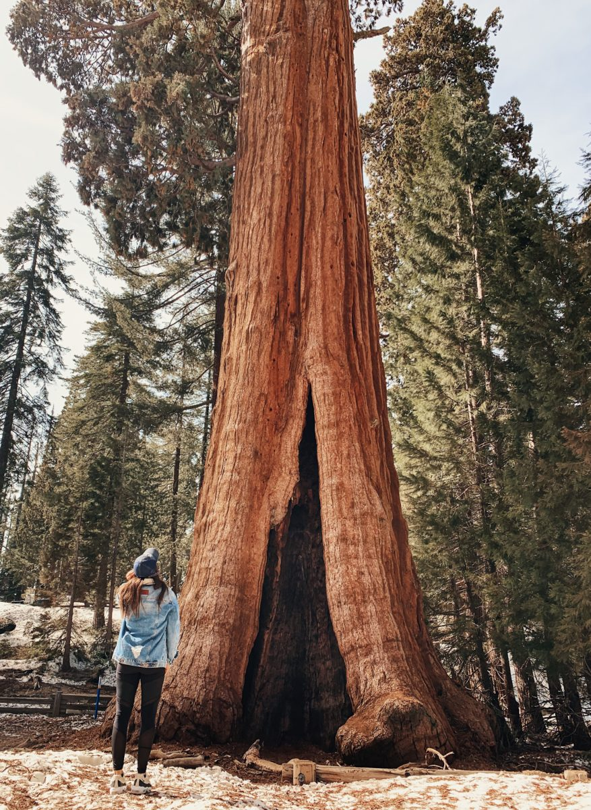
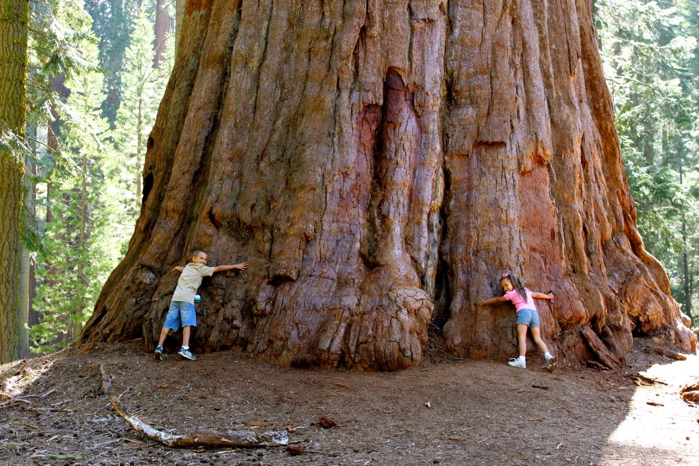
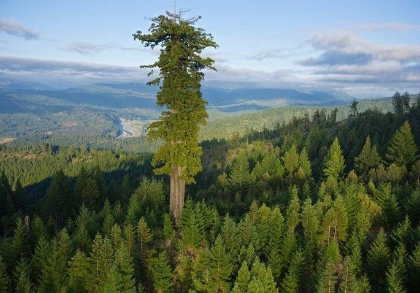

O por que as Sequoias são importantes para o nosso planeta?

Ao longo do processo de evolução, essas árvores desenvolveram adaptações que as protegem dos danos causados pelo fogo. Possuem, por exemplo, uma casca grossa e resistente que, em geral, protege contra danos importantes. Elas são uma espécie pioneira, ou seja, estão entre os primeiros organismos a colonizar um ambiente.


Aqui vemos a Sequoia sempervirens a mais alta do mundo mede 115,72 m, aproximando-se dos 130 m correspondentes à altura máxima alcançável de uma árvore. Descoberta em 2006, foi apelidada de Hyperion e terá cerca de 1000 anos.